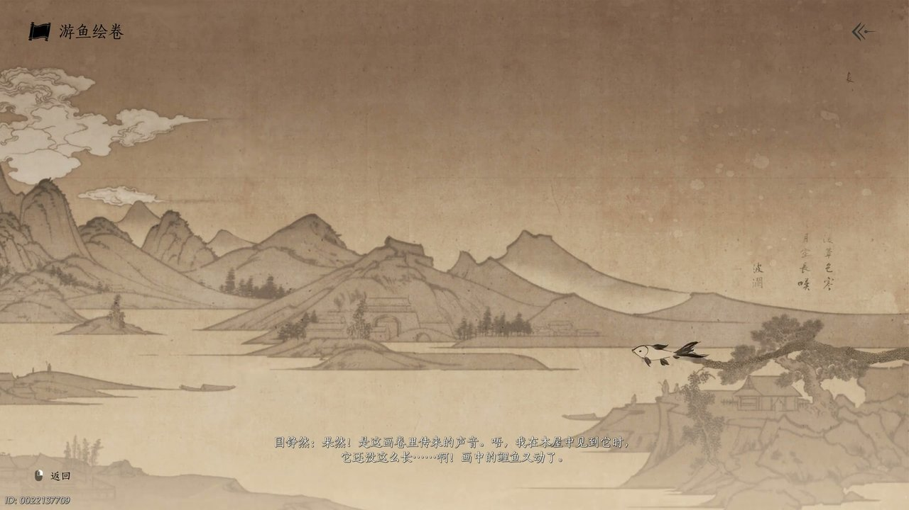
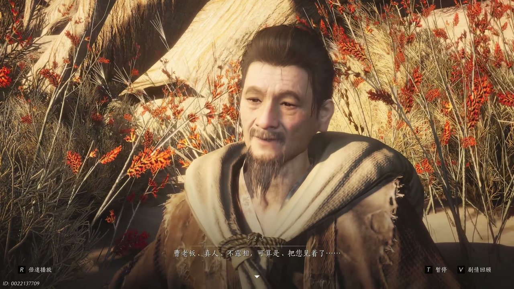
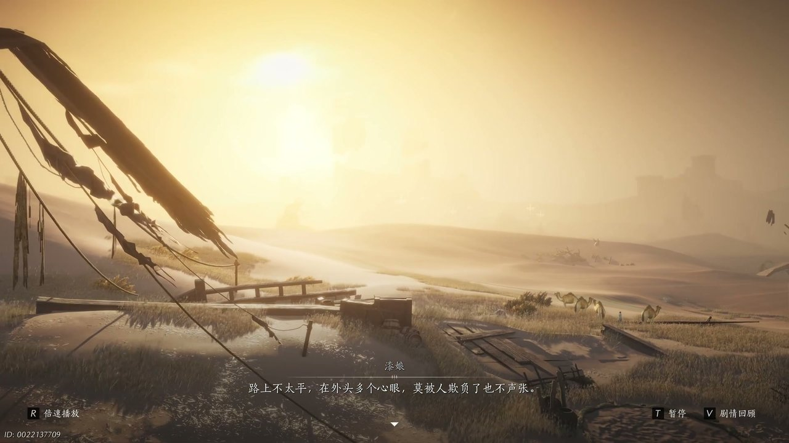
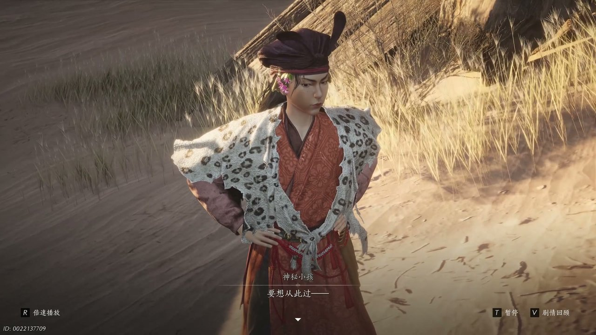
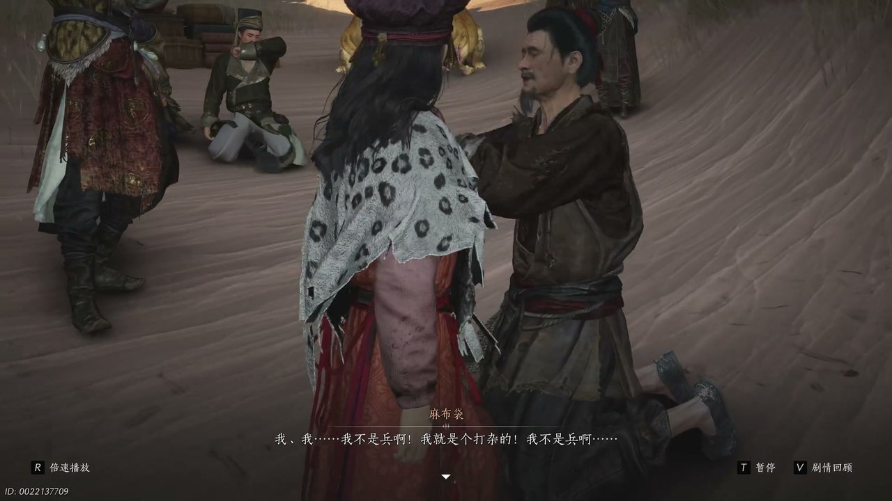

燕云背后的故事：第9集 麻布袋
燕云背后的故事：第9集 麻布袋

朋友们，上一集咱们说到——渡口纵火调虎离山、幻境铜钱迷惑心神、少东家独自潜入熔炉腹地，三处线索交织让前路愈发迷茫。新来的朋友可能纳闷，少东家摆脱孩童之后，为何手握地图却找不到地牢通路？简单说，熔炉内部通道被幻境彻底打乱，官兵绘制的舆图早已失去原本的指引作用，他只能在迷宫般的甬道里四处摸索。可他哪知道，指引方向的关键并不在地图之上，而是藏在随身携带的一幅画卷当中。这不，少东家对着几张错乱的舆图连连皱眉，开始反复比对路线的偏差。

荒芜的沙地之上风沙不断席卷四周，少东家摊开数张从官兵手中得来的舆图，眉头紧紧蹙起，手指划过图纸上标记的路线不停摇头。少东家开口自语：“这份鱼图不对，那份鱼图也不对，我的于途在哪。”他抬手摩挲图纸边缘，想起方才捡到的专属舆图早已被人撕毁，心中满是无奈。风沙卷起细碎沙粒打在图纸之上，远处隐约传来老者喃喃前行的脚步声，一名老丈独自赶路，口中不停念叨要前往玄泉驿传递消息。少东家连忙上前拉住老者询问路径，老丈只顾往前走，口中说道：“玄玄义不就在于途上吗，他们在等着我呢。”少东家紧随老者脚步前行，耳边渐渐听见潺潺水声，可走到声音源头，沙地里却空空荡荡，根本没有溪流与驿站的踪迹，老者也在风沙里消失不见。

少东家站在空无一人的沙地中满脸疑惑，四周风沙渐渐平息，他低头思索方才听见的水声来源，忍不住自言自语：“嗯方才分明听到水声，可这水声是从何而来。”他抬手抚摸衣襟，忽然察觉到声响来自怀中物品，随即取出一幅画卷缓缓展开。少东家轻声说道：“果然是这画卷里传来的声音，我在木屋中见到他时，他还没这么长啊。”画卷之上鲤鱼纹样缓缓游动，水波纹路不断延展，化作一条看不见的通路。少东家望着游动的鲤鱼心生触动，口中说道：“画城的鲤鱼又动了，我要你画完这幅画，他是我要的答案，也是你要的答案。”他满心期盼画卷能指明寒姨与江叔的下落，随着鲤鱼不断向前游动，画卷为他开启了通往另一处地界的入口。

穿过画卷开辟的通道，少东家化身成背着麻布袋的随行之人，混进一支赶路的商队之中，见到了商队主事曹老板。少东家连忙上前拱手：“曹老板真人不露相，可算是把你剪破了。”他表明自己想要跟随商队前往黑肥城的心愿，想要借着商队掩护探寻线索，还谎称自己是队伍里一名成员的兄长，请求曹老板收留。曹老板上下打量着背着麻布袋的少东家，神色平静没有过多追问，只是吩咐手下收拾行装准备启程。八字胡随从凑到一旁打量麻布袋，好奇里面藏着的物件，少东家紧紧护住布袋不肯让人触碰，只说里面是不能随意拆开的要紧东西。曹老板抬手制止众人的打探，开口说道：“军队凑搭子讲究个缘分，俺们不抢去了。”随后让少东家暂且留在队伍之中等候出发。

商队整装待发之际，漆娘提着一兜馍馍匆匆赶来，走到少东家身前将食物递给他，神情满是关切。漆娘轻声说道：“我晓得你是不会回来了，你是个实心人，帮我干了一个月的活，啥也不图。”她抬手整理好少东家肩上的麻布袋，继续叮嘱：“路上不太平，在外头多个心眼，莫被人欺负了，也不声张。”漆娘把馍馍塞到布袋之中，又说了几句叮嘱的话语，看着商队走远才缓缓转身离去。队伍沿着偏僻山路前行，风沙吹得众人步履艰难，同行的孟大郎主动与少东家搭话，自称是做药材生意的平凉人，见少东家布袋严实，想要瞧瞧里面的稀罕物件，被少东家连忙拒绝。花坨坨路过瞧见这一幕，出言制止孟大郎，提醒众人路途之中不要随意打探他人隐私。

一行人走入山林狭窄小道，疲惫的众人刚停下脚步休整，林间忽然跳出几名蒙面劫匪拦住去路。为首的孩童高声喊道：“此树是我栽，此路是我开，要想从此过，留下买路财。”劫匪们手持兵器围住整个商队，神色凶狠逼迫众人交出身上财物，一名劫匪盯着八字胡随从不停打趣，吓得对方连连求饶。劫匪首领目光锐利扫过众人，察觉到队伍之中少东家身份特殊，厉声盘问众人来历，怀疑队伍里藏着军中探子。少东家躲在人群后方，紧紧护住身上的麻布袋，不敢轻易出声。劫匪步步紧逼，扬言若是众人不肯如实交代，便将所有人尽数斩杀，队伍瞬间陷入紧张的危机之中。

面对劫匪的逼问，八字胡随从吓得浑身发抖，率先被劫匪拉扯出去审问。少东家见状主动站出身来，压低声音说道：“我就是个打杂的，我原先在清泉驿站打杂，有个当兵拎着布袋子死到驿站门口，我才接手了这个布袋。”他谎称布袋是死去兵士遗留之物，自己只想安稳跟随商队赶路，并无其他心思。劫匪首领盯着麻布袋满心疑惑，依旧认定布袋之中藏有贵重货物，执意想要打开查看。少东家拼命阻拦，声称布袋里只是寻常物件，关乎故人嘱托不能损毁。劫匪几番试探之后，并未强行抢夺布袋，只搜刮了队伍身上少量银钱，便带着手下转身离开山林，危机终于暂时解除。
这一集看下来，我最大的感受就是少东家深陷异乡商队，前路处处暗藏危机。上一集里我们只知道熔炉幻境难解、地牢踪迹全无、孩童分队吸引守卫，到了这一集，我们知晓画卷指引通路、化身布袋客混入商队、路途遭遇劫匪盘问、布袋藏有重要信物四条关键线索。画卷还能开启多少隐秘地界？劫匪为何没有强行夺走麻布袋？曹老板是否看穿了少东家的真实身份？所有线索全部汇聚到前往黑肥城的路途之上，少东家依旧以麻布袋客的身份混迹商队，前路战乱不断危机四伏。下一集，商队遭遇战乱阻隔进退两难。有人好奇麻布袋里究竟藏着何物？黑肥城之中能否找到寒姨的踪迹？评论区留下你的想法，持续关注，咱们下一集跟随商队穿越战乱地界、直面未知凶险！
关于我们
📱 公众号名称：三天游戏
✍️ 作者：曾三天
扫码关注公众号，获取每日最新资讯

商务合作与版权
商务合作 / 内容投稿 / 品牌推广
请关注公众号「三天游戏」后台留言联系
版权声明：本文由作者整理，转载需注明出处。